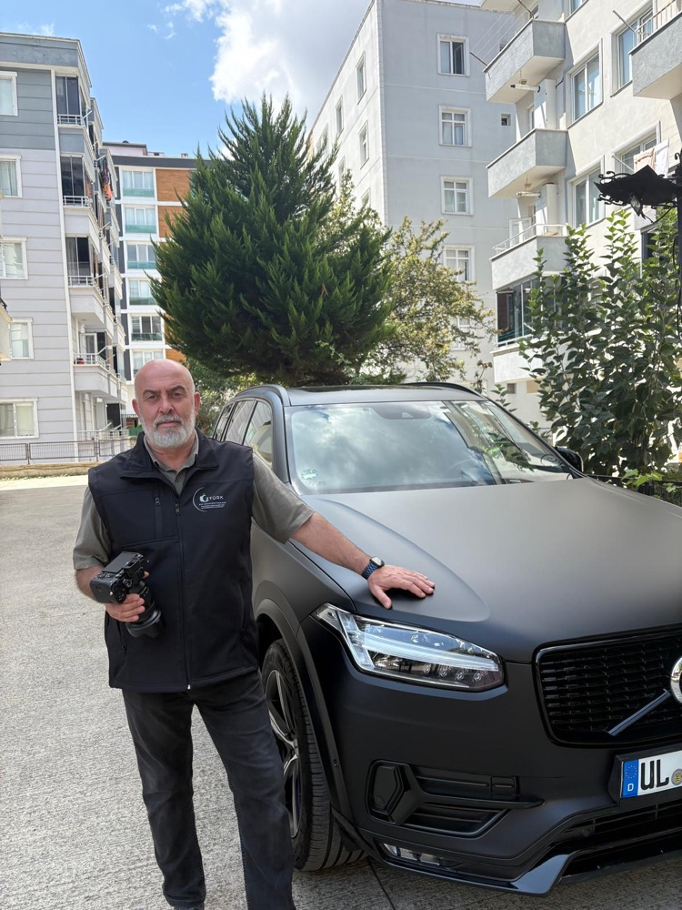
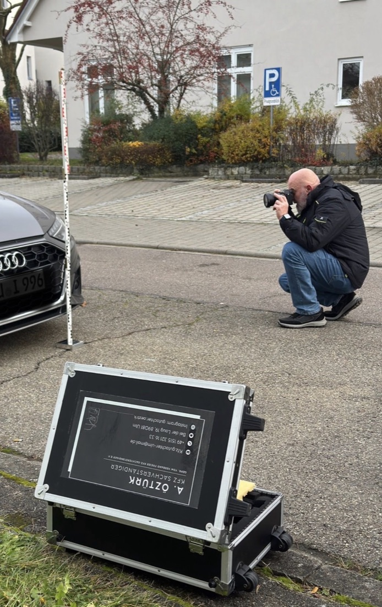
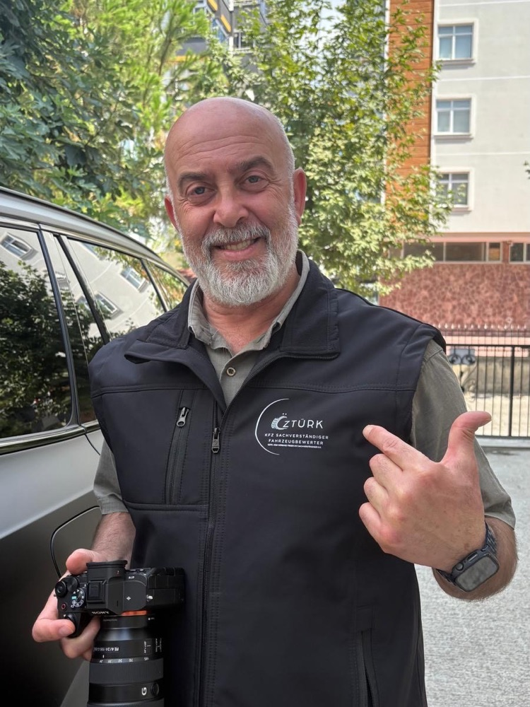

Unfall- & Schadengutachten
Vollständige Dokumentation nach unverschuldetem Unfall: Reparaturkosten, Wertminderung, Nutzungsausfall, Restwert – die Grundlage für Ihren vollen Schadenersatz.
Für Geschädigte i. d. R. kostenlosUnabhängiger Kfz-Sachverständiger · Ulm
Bei einem unverschuldeten Unfall zahlt die gegnerische Versicherung Ihr Gutachten – für Sie als Geschädigten ist es in der Regel kostenlos. A. Öztürk kommt zu Ihnen in Ulm & Umgebung und sichert den vollen Schadenersatz. Täglich bis 22 Uhr.
Foto vom Schaden reicht für eine kostenlose Ersteinschätzung – meist Antwort innerhalb weniger Minuten.

Wichtig nach dem Unfall: Unterschreiben Sie nichts von der gegnerischen Versicherung, bevor ein unabhängiger Gutachter den Schaden beziffert hat. Rufen Sie uns zuerst an – die Erstberatung ist kostenlos.
Von der Unfallstelle bis zur Auszahlung: Gutachten, die vor Versicherungen und vor Gericht Bestand haben.
Vollständige Dokumentation nach unverschuldetem Unfall: Reparaturkosten, Wertminderung, Nutzungsausfall, Restwert – die Grundlage für Ihren vollen Schadenersatz.
Für Geschädigte i. d. R. kostenlosKleiner Schaden, klare Sache: schlanke, rechtssichere Dokumentation für Parkrempler & Co. – schnell erstellt und fair abgerechnet.
Neutraler Marktwert für Verkauf, Kauf, Leasing-Rückgabe, Erbschaft oder Scheidung – nachvollziehbar dokumentiert und anerkannt.
Bevor Sie unterschreiben: unabhängige Prüfung auf Vorschäden, Technik und versteckte Mängel. Das kann Sie vor einem teuren Fehlkauf bewahren.
Beliebt bei PrivatkäufernProfessionelle Foto- und Messdokumentation direkt am Fahrzeug – damit später niemand am Schadenhergang zweifeln kann.
Auf Wunsch geht das Gutachten direkt an Versicherung, Anwalt oder Werkstatt – kurze Wege, schnelle Regulierung, keine Behördendeutsch-Odyssee.

Viele Geschädigte verschenken bares Geld, weil sie das Gutachten der gegnerischen Versicherung akzeptieren. Dabei gilt:
Gutachten akzeptiert von allen deutschen Kfz-Versicherern
Kein Papierkram-Marathon: Sie melden sich einmal – den Rest übernehmen wir.
Anruf oder WhatsApp mit Fotos vom Schaden. Sie bekommen sofort eine ehrliche Ersteinschätzung – kostenlos und unverbindlich.
Wir kommen dorthin, wo Ihr Auto steht – nach Hause, zur Arbeit oder in die Werkstatt. Auch abends und am Wochenende, täglich bis 22 Uhr.
Ihr Gutachten liegt in der Regel am nächsten Tag vor – vollständig, nachvollziehbar und anerkannt bei Versicherungen.
Auf Wunsch senden wir das Gutachten direkt an Versicherung oder Anwalt und bleiben dran, bis Ihr Schaden bezahlt ist.
„Herr Öztürk war sehr professionell und fachkompetent. Alles lief schnell, unkompliziert und verständlich ab. Ich habe mich gut beraten gefühlt und kann ihn definitiv weiterempfehlen.“
„Alles zu meiner Zufriedenheit. […] Schaden wurde sofort aufgenommen und das Gutachten lag bereits am nächsten Tag vor.“
„Herr Öztürk bietet zeitnahe Termine an. Die Kommunikation ist äußerst freundlich. Sehr gute Erreichbarkeit. Wo findet man derartige Öffnungszeiten, perfekt. Es ist ein absolut kompetentes Gutachterbüro.“
„Ich bin absolut zufrieden mit dem Gebrauchtwagen-Check von Herrn Öztürk. Sehr professionell, ehrlich und kompetent.“
„Wir arbeiten jetzt seit längerem mit Gutachter Öztürk zusammen und alle unsere Kunden waren rundum zufrieden. Absolute Weiterempfehlung. Danke für die gute Arbeit.“
„Herr Öztürk hat sehr gute und professionelle Arbeit geleistet. Der Kontakt war schnell und unkompliziert, man hat immer zügig eine Rückmeldung bekommen. Alles lief reibungslos und zuverlässig ab.“
Alle Bewertungen stammen wortgetreu aus dem öffentlichen Google-Unternehmensprofil; Kürzungen sind mit […] gekennzeichnet.
Bei A. Öztürk sprechen Sie nicht mit einem Callcenter, sondern direkt mit dem Sachverständigen, der Ihr Fahrzeug begutachtet. Geprüft vom Verband freier Kfz-Sachverständiger e.V., mit moderner Mess- und Fototechnik – und mit Öffnungszeiten, die sich nach Ihrem Alltag richten: täglich bis 22 Uhr, auch am Wochenende.
Beratung auf Deutsch und Türkisch – damit bei der Schadenabwicklung nichts verloren geht.

Begutachtung dort, wo Ihr Fahrzeug steht – im Umkreis von rund 30 km um Ulm.
Sind Sie unverschuldet in einen Unfall geraten, trägt in aller Regel die Versicherung des Unfallverursachers die Kosten für das Schadengutachten. Für Sie als Geschädigten ist es damit im Normalfall kostenfrei.
Der Gutachter der gegnerischen Versicherung arbeitet im Auftrag der Gegenseite. Als Geschädigter haben Sie das Recht auf einen eigenen, unabhängigen Sachverständigen – der auch Wertminderung, Nutzungsausfall und versteckte Schäden vollständig dokumentiert. Was nicht im Gutachten steht, wird nicht bezahlt.
Die Begutachtung erfolgt zeitnah vor Ort – oft noch am selben Tag. Das fertige Gutachten liegt in der Regel innerhalb von 24 Stunden vor.
Ja. Die Begutachtung findet dort statt, wo Ihr Fahrzeug steht – zu Hause, am Arbeitsplatz oder in der Werkstatt. Erreichbar sind wir täglich bis 22 Uhr, auch am Wochenende.
Bei kleineren Schäden erstellen wir ein Kurzgutachten, das den Schaden rechtssicher dokumentiert. Ob sich ein vollständiges Gutachten lohnt, klären wir kostenlos vorab – schicken Sie einfach Fotos per WhatsApp.
Der Preis richtet sich nach Fahrzeug und Prüfumfang. Rufen Sie kurz an oder schreiben Sie per WhatsApp – Sie erhalten sofort ein faires Festpreis-Angebot.
Täglich bis 22 Uhr erreichbar. Ein Foto vom Schaden genügt für die kostenlose Ersteinschätzung.